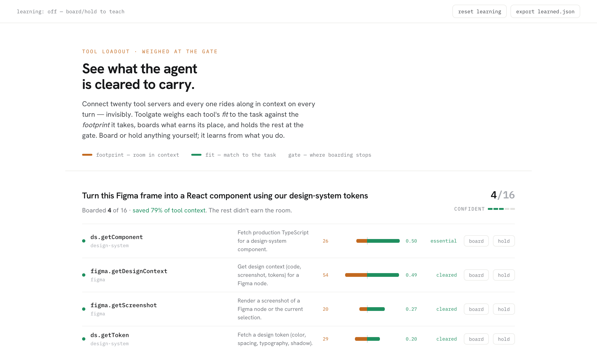

An agent harness connects to a lot of tools, then loads all of them into the model's context on every turn, whether the task needs them or not. Toolgate weighs each tool's fit to the task against the footprint it takes, boards what earns its place, and holds the rest at the gate. The whole decision is visible, and you can change it in one click.
footprint — room in contextfit — match to the taskgate — where boarding stops

One task, weighed. Four tools board; the rest are held below the gate.
What it's for
Cut the bloat. Fewer tool definitions in context means faster, cheaper, sharper responses. In the demo, most tasks load 1–4 tools instead of a hundred-plus.
Keep the human in the loop. An agent harness normally decides its tools invisibly. Toolgate shows the choice, and why, so you can board or hold anything yourself.
Learn, don't nag. Your board/hold choices train it. A tool you keep boarding for a kind of task starts clearing the gate on its own.
How it works
fithow well a tool matches the task (0 to 1)
footprintthe room it takes in context: its schema size, plus a nudge for slow or risky tools
worthfit minus footprint. Board it while it's still worth the room; stop at the gate.
When the last tool boarded and the first tool held are nearly tied, Toolgate says it's unsure and holds a wider set instead of faking confidence. Under the hood, board/hold trains a small per-tool contextual bandit, so the harness gets better at your work over time.
How it plugs in
Toolgate runs as a single MCP server that exposes two tools: find_tools(task) and run_tool(...). The harness registers only Toolgate, so its visible tool list stays two tools wide while the real decision happens inside, where it can be seen and overruled. Works with opencode, Codex, Gemini CLI, Claude Code, or any MCP client.